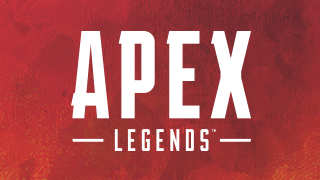
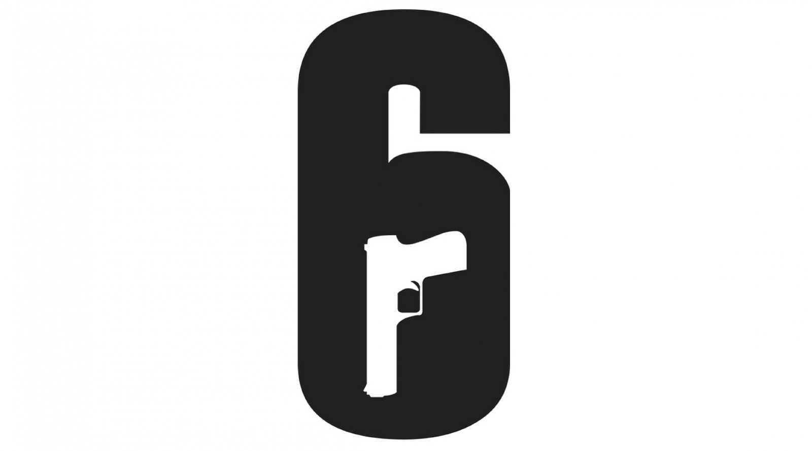
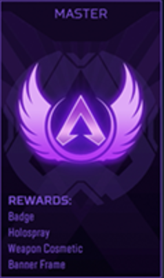
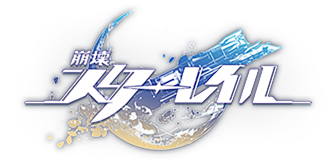

My_portfolio
日常生活でしているゲーム紹介
Web gamear

APEX
普段はこのゲームをしている。対戦ゲームではかなり有名で一度は聞いたことあるともいます。それなりに楽しいです。ただし、チーターが割と多いです。
OVERWACHI
このゲームをやると大体の人はどのゲームでも上手くなります（多分）。理由は、チームで協力したり連携したりなどあらゆる場所で仲間とのコミュニケーションを必要とするからです。ただし、だんだん試合の後半になるにつれストレスが溜まり味方のせいにする場合もあります。主は暴言などのヤバい発言はしないのですが一番ひどかったのは全部自分が正しいみたいな言い方をし、ゲームを放棄してしまう人がいましたw。こんな感じで色々と治安が悪いです。

RS6
RS6はレインボーシックスシージの略でこのゲームをやりこんでいる人なら知っている略称です。このゲームはOWと同じ5vs5で戦うのですが、リスポーン（蘇生）がなく一度こけると観戦画面に切り替わります。個人的にはOWよりかは治安はいいものの、一定の確率で暴言が飛び交います。メンタル面に強い人はおすすのゲームです。
主な戦績
特に誇れるものはないですが一応書いておきます。（主は弱いです）
APEX
ソロマスターを経験しています。（現在進行形）
初めてマスターに行けたのはS7。
そこから度々マスターに行けるようになり一番難しいと言われているs12のマスターバッチを持っています。
今はゲーミングPCを買い、CS機から移行する形になりましたが先日PC初マスターを踏むことができました。


OWERWACHI
オーバーウォッチではCS機でソロ世界TOP500位を維持した経験があります。PCではこのゲームをやっていませんがキーボードに慣れてきたら挑戦してみようと思います。
RS6
虹録では、初期の頃は全く勝てなかったのですが、エメラルド帯が追加された時に体がボロボロになるまでゲームをしてようやくエメラルド帯に入れました。プラチナ帯というものがあるのですがなぜかすんなりと駆け上がれましたw

About
--------★--------
